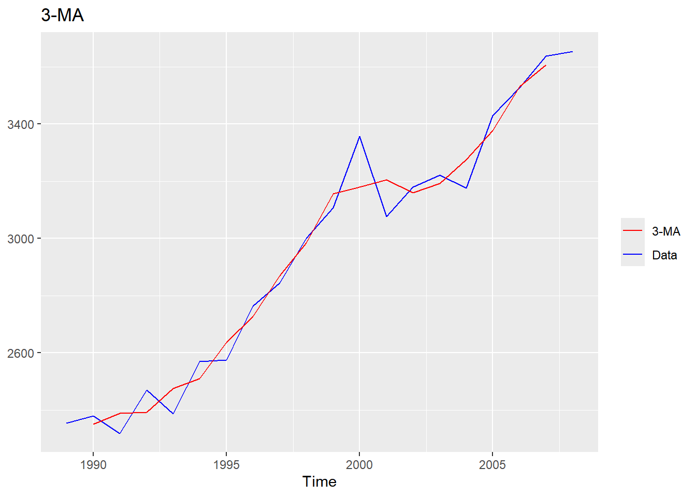
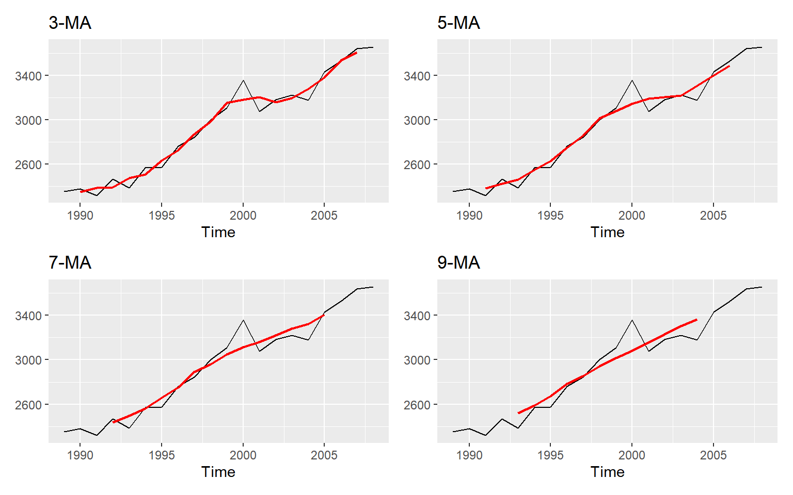
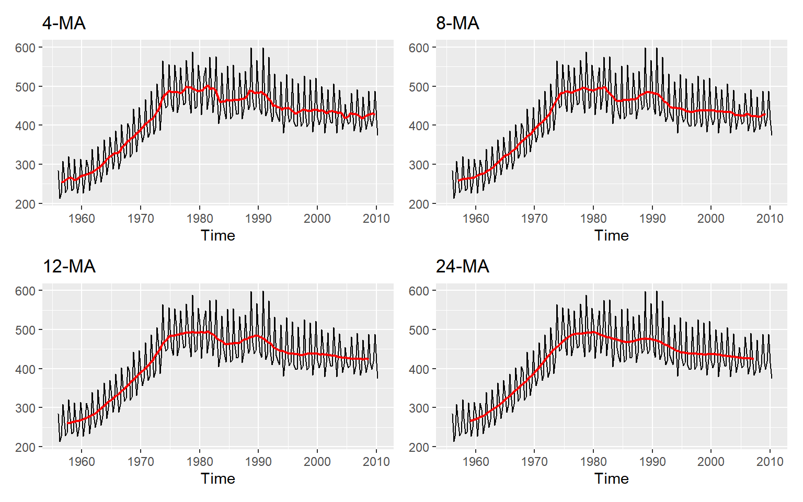
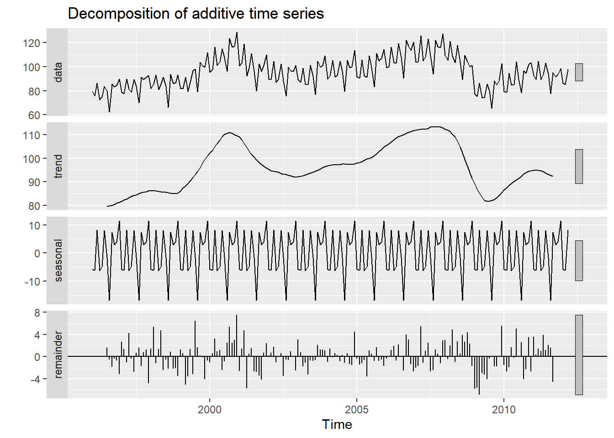
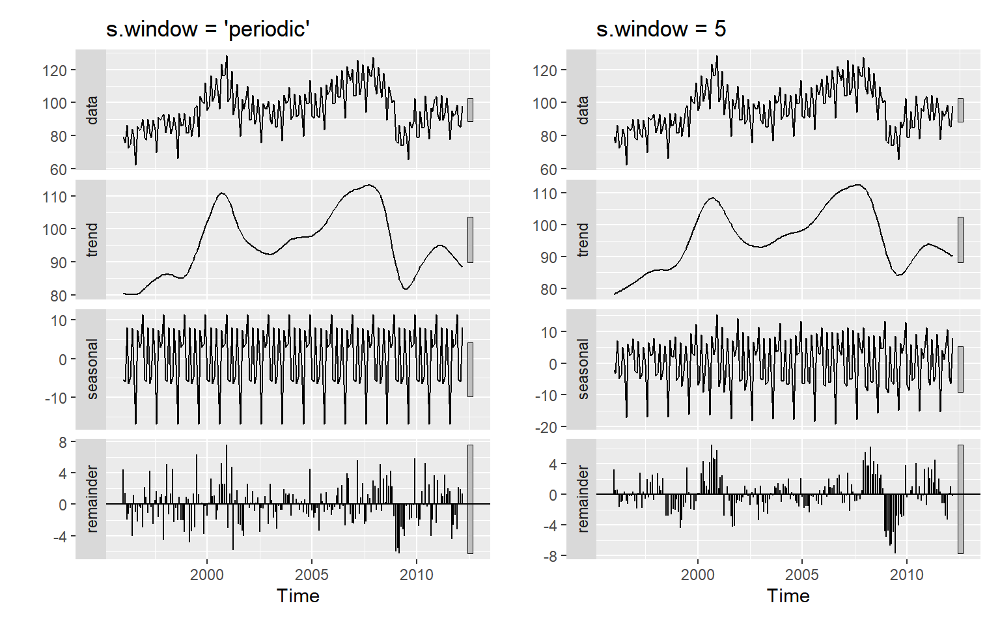
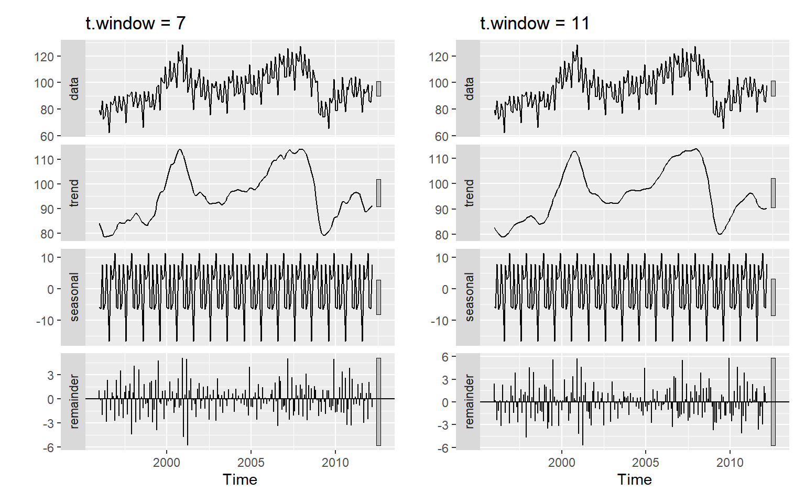

시계열 분해
전통적 시계열 분해 기법
- 이동평균법에서 차수 \(m\)의 효과:
elecsales
이동평균법의 차수를 증가시키면, 더 많은 자료를 이용해서 평균값을 계산하게 되고, 따라서 더 매끄러운 추세 곡선을 얻게 된다. elecsales에 \(m\)-MA를 적용시켜 얻은 결과를 원자료와 함께 그래프로 나타내 보자. 우선 3-MA의 결과를 Figure 1 에 나타내 보자.
autoplot(elecsales, series = "Data") +
autolayer(ma(elecsales, 3), series = "3-MA") +
scale_color_manual(values = c("Data" = "blue",
"3-MA" = "red")) +
labs(title = "3-MA", color = NULL, y = NULL)
elecsales에 3-MA를 적용한 결과3-MA의 결과는 원자료보다 매끄로운 형태를 보이고 있음을 알 수 있다. 이제 차수 \(m\)을 증가시키면 어떤 결과를 얻게 되는지 Figure 2 에서 살펴보자.
library(patchwork)
p1 <- autoplot(elecsales) + autolayer(ma(elecsales, 3), size = .8, color = "red") +
labs(y = NULL, title = "3-MA")
p2 <- autoplot(elecsales) + autolayer(ma(elecsales, 5), size = .8, color = "red") +
labs(y = NULL, title = "5-MA")
p3 <- autoplot(elecsales) + autolayer(ma(elecsales, 7), size = .8, color = "red") +
labs(y = NULL, title = "7-MA")
p4 <- autoplot(elecsales) + autolayer(ma(elecsales, 9), size = .8, color = "red") +
labs(y = NULL, title = "9-MA")
(p1+p2)/(p3+p4)
elecsales 자료에 대한 차수 m의 효과이번에는 호주에서 1956년부터 2010년까지 분기별 맥주 생산량 자료인 ausbeer에 대하여 \(2 \times m\)-MA를 적용한 결과를 원자료와 함께 Figure 3 의 그래프로 나타내 보자.
library(patchwork)
p1 <- autoplot(ausbeer) + autolayer(ma(ausbeer, 4), size = .8, color = "red") +
labs(y = NULL, title = "4-MA")
p2 <- autoplot(ausbeer) + autolayer(ma(ausbeer, 8), size = .8, color = "red") +
labs(y = NULL, title = "8-MA")
p3 <- autoplot(ausbeer) + autolayer(ma(ausbeer, 12), size = .8, color = "red") +
labs(y = NULL, title = "12-MA")
p4 <- autoplot(ausbeer) + autolayer(ma(ausbeer, 24), size = .8, color = "red") +
labs(y = NULL, title = "24-MA")
(p1+p2)/(p3+p4)
ausbeer 자료에 대한 차수 m의 효과- 전통적 분해 기법 적용 예제:
fpp2::elecequip
decompose(elecequip) %>%
autoplot() 
elecequip 자료에 대한 전통적 분해 기법 적용 결과각 패널의 오른쪽 끝에 높이가 동일한 막대를 배치하여, 각 성분의 상대적 크기를 쉽게 확인할 수 있게 하였다. 불규칙 성분이 표시된 마지막 패널의 막대가 가장 크다는 것은 불규칙 성분의 크기가 가장 작다는 의미가 된다. 또한 추세 성분의 처음과 마지막 6개월 자료는 NA가 되기 때문에 해당 기간에는 결과가 표시 되지 않았음을 알 수 있으고, 계절 성분이 동일한 형태를 취하고 있음도 확인할 수 있다.
STL 분해 기법
- STL 분해 기법 적용 예제:
fpp2::elecequip
library(patchwork)
p1 <- stl(elecequip, s.window = "periodic") %>%
autoplot() + labs(title = "s.window = 'periodic'")
p2 <- stl(elecequip, s.window = 5) %>%
autoplot() + labs(title = "s.window = 5")
p1 + p2
elecequip 자료에 대한 STL 분해 기법 적용 결과: s.window의 효과library(patchwork)
p3 <- stl(elecequip, s.window = "periodic", t.window = 7) %>%
autoplot() + labs(title = "t.window = 7")
p4 <- stl(elecequip, s.window = "periodic", t.window = 11) %>%
autoplot() + labs(title = "t.window = 11")
p3 + p4
elecequip 자료에 대한 STL 분해 기법 적용 결과: t.window의 효과